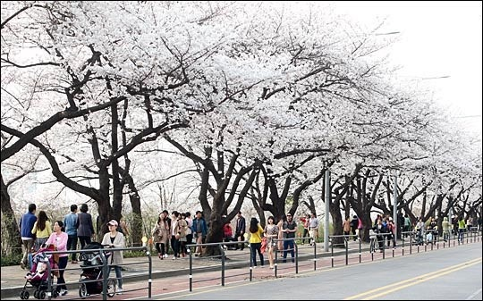
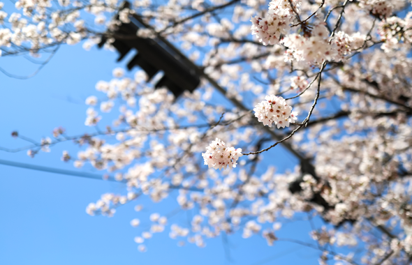
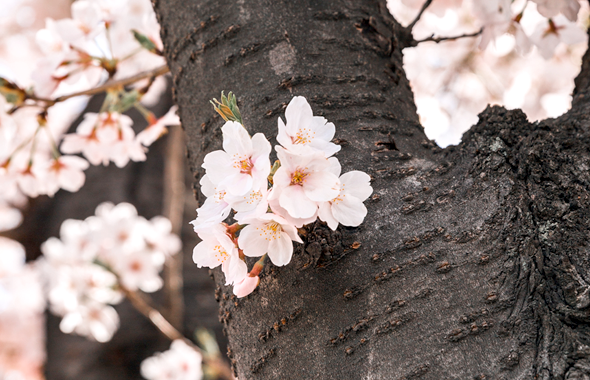
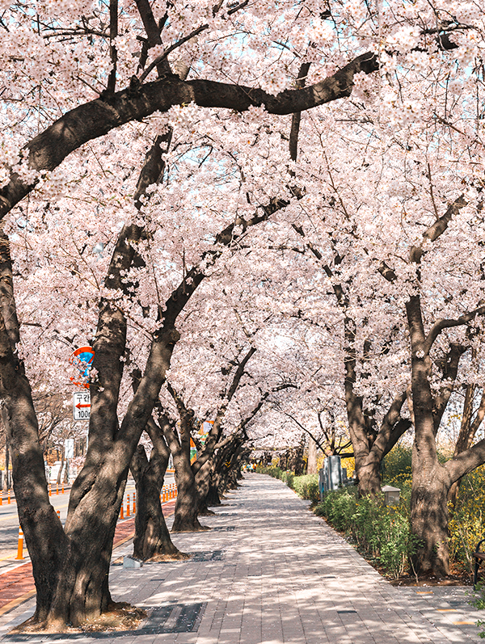
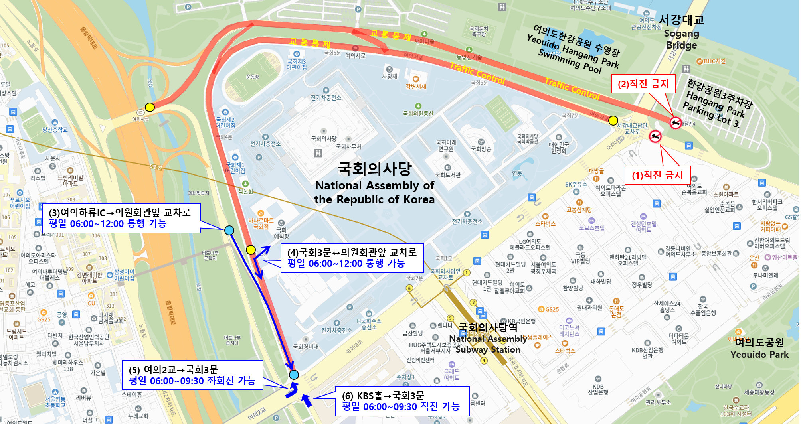

+영등포 여의도 봄꽃축제
1. 봄꽃축제 소개
- 여의도에는 벚나무 1,886주와 진달래, 개나리, 철쭉 등 13종 87,859주의 봄꽃이 만개합니다.
2005년부터 시작된 영등포 여의도 봄꽃축제는 넓게 트인 한강을 배경으로 풍성한 볼거리와 즐길거리가
넘치는 우리나라 대표 봄 축제입니다.
아름다운 봄꽃과 다채로운 문화예술이 살아 숨 쉬는 봄꽃축제는 매년 4월 초 개막식을 시작으로 여의서로
및 한강공원에서 펼쳐지는 공연,전시, 체험 행사들로 상춘객 여러분들의 설레는 마음을 가득 채워드립니다.
2. 개화시기


- 국회6문과 7문 사이 벚꽃길에는 여의도 벚꽃 군락지의 평균 개화시기를 관측하기
위해 영등포구청과 기상청이 지정한 관측표준목(118~120번 나무)이 있습니다.
이 나무의 한 가지 중 꽃 3송이가 완전히 피었을 때를 개화일로 봅니다.
|  |
연도 |
개화 |
만발 |
| 2024 |
2024.03.31 |
2024.04.03 |
| 2023 |
2023.03.26 |
2023.03.30 |
| 2022 |
2022.04.04 |
2022.04.08 |
| 2021 |
2021.03.25 |
2021.03.30 |
| 2020 |
2020.03.30 |
2020.04.03 |
| 2019 |
2019.04.04 |
2019.04.08 |
| 2018 |
2018.04.02 |
2018.04.05 |
| 2017 |
2017.04.06 |
2017.04.10 |
| 2016 |
2016.04.02 |
2016.04.05 |
| 2015 |
2015.04.05 |
2015.04.07 |
봄꽃축제 교통통제 구간
- 전면통제
- 통제기간 중 차량통행 불가
- 서강대교남단 사거리↔국회 5문↔국회 3문↔의원회관앞 교차로
- 여의도 한강공원 3주차장 입구↔여의하류IC 교차로
-
-
- 가변통제
- 특정 시간대만 차량 통행 가능, 그 외 통행 불가
- 여의하류IC→의원회관앞 교차로: 평일 06:00~12:00 통행 가능
- 국회3문↔의원회관앞 교차로: 평일 06:00~12:00 통행 가능
- 여의2교→국회3문: 평일 06:00~09:30 좌회전 가능
- KBS홀→국회3문: 평일 06:00~09:30 직진 가능
교통통제 배치도
